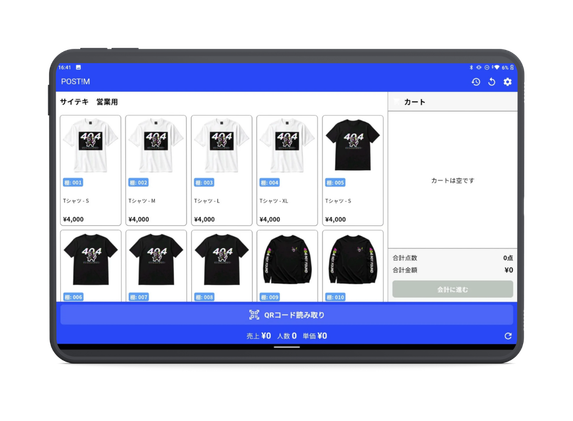

← ホームに戻る
← ホームに戻る
← ホームに戻る
← ホームに戻る
タブレット型のPOSで現地販売をリアルタイム可視化。
「いま何が売れているか」「在庫はあといくつか」「次回は何を作るべきか」を、
勘から数字に変えるシステムです。
POSの数字が後日エクセルでまとめられる頃には、もう次のイベント。リアルタイムで見えないと、判断は遅れます。
独自POSが取得する販売データを、現場でも本部でも即座に確認できます。
レジを通った瞬間に、商品別の売上・残在庫が現場と本部で即座に共有されます。
会場の通信が不安定でも独自設計で稼働継続。「通信障害でレジ止まる」がゼロ。
イベント終了と同時に販売実績が確定。次回の製造数・販促判断に直結します。

年間100案件超の販売データが、POST!Mを通じて蓄積されています。これが「次回はどの商品をいくつ作るべきか」「色・サイズの内訳はどうするか」の根拠データです。
グッズ製造提案サービスや、ECサイト運営（ECT!M）の品揃え判断にも、すべて活用されます。
年間100案件超の運用データから、代表的な指標。
音楽フェスから舞台・アニメ・コミックマーケットまで。ジャンルを問わず、物販のある現場をご一緒しています。
システムだけの貸し出しから、全体最適化までお気軽にご相談ください。